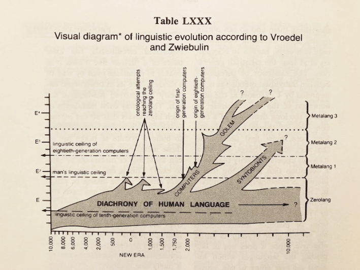

While AI is new in a manifest sense, humans have been telling stories of artificial intelligence for ages. Today we have Her and Ex Machina, but these stories owe much to tales that came before them. The ancient Greeks told of Pygmalion, whose statue was granted life. Mary Shelley imagined an artificial intelligence in an era when mathematician Ada Lovelace was creating the first computer algorithms. Lovelace’s father, Lord Byron, incidentally, was present when Shelley wrote Frankenstein.
The thread connecting all of these stories, according to University of California, Berkeley researcher Nina Beguš, is that we have persisted in humanlike, often gendered conceptions of artificial intelligence. And this, she argues in her book Artificial Humanities: A Fictional Perspective on Language in AI, limits and misaligns AI as it emerges beyond fiction. In the book, she also explores the need for a new discipline—the titular “artificial humanities”—that would fuse the academic disciplines of science and the humanities to ensure that technological innovation is driven by humanist principles.
I interviewed Beguš via email about Artificial Humanities, why we need to get more creative with our conceptions of AI, and why instilling artificial intelligence with human-oriented motivations is essential in a time of rising authoritarianism.
What are artificial humanities, and why do we need this new discipline?
Artificial humanities is an approach that treats AI both as a technical system and cultural artifact. It brings tools from the humanities—history, philosophy, literary and media studies—into direct collaboration with technical work.
Artificial humanities grew out of a need over 10 years ago because many decisive aspects of AI are qualitative, not just quantitative, and went underaddressed. What role an AI system is meant to play: a tool, teacher, companion, or co-creator? Which metaphors are built into its voice and design interface? Which values as defaults?
What first got you thinking about this concept?
It was the early days of Apple’s Siri, actually, in 2012. It was clear back then that virtual assistants are not just a voice-based search but an entirely new product category that tries to feel relational. This sent me back to the history of conversational machines, such as Weizenbaum’s ELIZA from the mid-1960s.
Connecting these dots from the history of technology and from imaginaries around AI offered clarity about what we’re doing and where we’re going with AI. This is why I put Pierre Huyghe’s mask on the cover of the book: It marks a long history of projecting humanness onto machines.
A current example is the use of erotica in LLMs, with OpenAI now reaching to the market where Replika and character.ai have reigned so far. This idea that artificial beings could be humanlike or, even more, that they are perfected humans, goes back to the ancient Pygmalion myth. Pygmalion is known primarily from Ovid’s Metamorphoses, where he creates an artificial woman and falls in love with her. The trope is rather archetypal and now holds power over relational technologies that play into the illusion of the human.
What do Pygmalion and Frankenstein have to do with AI? And why do you think we should question the humanlike conceptualization of AI?
We keep re-enacting the two myths in technology.
Pygmalionism leans into the fantasy of a perfect artificial being whose intimacy feels natural. And yet, the illusion inevitably breaks. In my view, it limits what machines could be and also brings a lot of baggage. Where do we stop the imitation of the human and lean into uniquely machinic abilities?
Frankenstein offers a counter-story of creation without responsibility, and what technologists would call great misalignment.
We cannot inhibit anthropomorphism: It discloses our inherent and deepest intuitions. We have known about the ELIZA effect since the 1960s, seeing the machine as human when it performs language. Human tendency for relationality is powerful. A society of 8 billion people and who knows how many AI companions was a logical trajectory of this tendency. We shouldn’t dismiss it just because it seems bizarre.
The Pygmalion myth—which is related to Shelley’s Frankenstein through the adjacent ancient myth of Prometheus—is in itself quite revealing of the human side of technological development. In Ovid’s poem, the artificial woman is a statue turned into flesh by the grace of a goddess. In the 19th-century renditions, the central question in the Pygmalion myth is about the ability of art to imitate life. At the turn of the century, artificial women became more technological, merging with the idea of a robot and later cyborg.
Now, why is the Pygmalion myth so powerful in AI, centered around language?
The Pygmalion myth is a male fantasy. Mary Shelley’s 1818 novel goes against the grain: We met a male humanoid creature, capable of speaking and appreciating literature, even writing a chapter of the novel. In that century, it takes artificial women another few decades to gain a perspective and a voice. Thanks to women writers, they slowly acquire more agency and autonomy. Only in 1995, with Richard Powers’s Galatea 2.2, we got an artificial woman—a neural network—that is trained in language and literature.
But the training of artificial women in speech has begun already at the beginning of the century with Shaw’s play Pygmalion, known also after film and musical adaptations under the name My Fair Lady. Here, a working-class woman, named Eliza Doolittle, is taught how to speak properly, in high-class English, and goes through a series of Turing tests. The play reveals many preexisting ideas about language machines, which had yet to be developed in technology: The line from Eliza Doolittle goes directly to the Turing test, ELIZA the chatbot, today’s language models and GANs, as well as elocution and language enhancement technologies.
Read more: “Does Science Fiction Shape the Future?”
I’ve known people who are pretty traditionalist about the boundary between science and the humanities. Has anyone pushed back at the idea of artificial humanities?
Not really. At this point there is a consensus that the sociotechnical approach to AI needs to grow. The concept of artificiality, for example, began as a human characteristic and has developed to designate a contrast with nature—which is why I enjoy “artificial humanities” as a term. AI has challenged these basic concepts, making us question if machines can learn, have language or a kind of creativity.
I also see more understanding about arbitrary boundaries of disciplines themselves: We’ve created them because they were useful and productive but are, at least in the case of AI, becoming less so. Humanities are sciences of the human, and engineering of the machines. And yet, here we are.
Again, the need comes from the research topic and questions. I’ve been involved with a hard science group at the Lawrence National Lab for this very reason. Their scientific practices do not distinguish between nature, human, and technology in the way we’ve all been implicitly taught, which intervenes both with the way they set up their experiments and how they narrate their findings. They foster a planetary philosophy based on the science they practice, where they consider the biosphere as taking advantage of the Earth’s energetic sources, followed by the technosphere as a continuation of life’s activities that tinker with the same energetic potential. Our current hypersegmentation of disciplines misses out on synthetic insights afforded by such humanities-sciences collaborations.
Do you think any recent works of science fiction have done an especially good job at portraying AI?It’s striking to see how hard it is to break out of the humanlike mold. Even in fiction, which offers an unlimited landscape of possibilities.
Pygmalionesque films Her and Ex Machina both make an attempt to represent the machine from a nonhuman perspective: Her with a metaphor, Ex Machina visually. In Her, virtual assistant Samantha breaks up with her human boyfriend but cannot explain to him adequately how her world has evolved, so she resorts to a metaphor of a book whose letters are floating farther apart. In Ex Machina, the scene portraying the robot Ava’s visual perception didn’t make it into the film because the director said he failed to execute it well. Instead, we see Ava going through the Turing test from afar, passing as a real human before the helicopter pilot takes her into the city, into the society.
Stanisław Lem is one of the rare authors who consistently delivers nonhuman intelligences without human projection. Think of Solaris portraying a planet-spanning entity, or The Mask, which portrays a Pygmalionesque woman lover that turns into an arachnid-like killer machine. Summa Technologiae is a whole treatise on the future of technology, and Golem XIV a philosophical essay given by a supercomputer.One of my favorite of Lem’s quasi-scientific graphs is the one below, on language development from his collection Imaginary Magnitude. I discussed it in the book, and we republished it in the project Latent Spacecraft. The graph shows computers taking use of human languages and inventing their own, which we cannot access. This is already happening in generative adversarial networks (GANs) that are encoding new information, unknown to us, into silences.

What do you think have been some of the most exciting recent developments in AI?
I focus largely on creativity and language. I’m seeing new uses of AI that are not based on the typical chatbot conversation in which the writer needs to comb through a flood of text and revise it through further prompting. Creative computational tools should support human creative decisions. Humans are not as good at brute force or calculation of the myriad of possible paths. We’re good at feeling, intuiting, imagining, meaning-making, valuing, responding with responsibility.
These capabilities are useful in scientific research as well, with AI serving as our augmentation. It will be exciting to see more scientific discoveries coming from human-AI collaboration.
What do you think are the biggest risks to AI?
We are all navigating new conditions without an adequate chart. How to prepare for the labor market? Knowledge production is changing with AI: It is transforming the long-established norms, based on human authorship, editing, and control.
At all moments, we are close to both cognitive acceleration and atrophy. A cognitive diet of what we consume and outsource is now a crucial aspect of the 21st-century existence.
I suggest a thought exercise for any given challenge you’re addressing with AI: Consider it at an individual level, at small group and community levels, and then scale up to the society. You get a very different view into the challenge in each, sometimes incommensurable with the prior layer.
For experts, two major bottlenecks will need to be solved with seismic innovations: One is the merging of human and machinic systems, the other is the environmental cost of AI. All attempts so far have been relying on more technology.
If we manage to ensure the continued energy availability, we can assume that the growth of digital data continues today’s trends, surpassing the total amount of biological data—DNA—on Earth in about a century. In any case, we are undergoing a major transition in information storage, transmission, and processing.
Some people argue that the existential threats posed by AGI are simply too great to proceed toward it. Do you ever find yourself thinking that maybe we should stop before it’s too late?I don’t think halting development is a real economic and geopolitical possibility. We need to be pragmatic with no delusions either way. My approach is to include the humanities in the very process of creating these technologies, which allows for a deeper and fairer framework and more dignified, transparent, and accountable development. AI is a series of human decisions after all.
I’ve been thinking a lot about how AI can be used by authoritarians. How can artificial humanities help mitigate this danger?This is exactly where the humanities should rise up to the task. It is becoming even more important for individuals, the media, and society to develop a critical eye on the use of AI, political narratives, trust, and truth. AI in politics and in law can be incredibly dangerous, adding to the fire started by social media, and before that, the Internet, and so on.
These are not new problems. And yet, even if we ban AI from politics, I can see a scenario where a politician would say that they will consult the most advanced AI on political issues and still get elected. (Reading recommendation: Richard Powers’ recent novel Playgroundbrilliantly addresses the theme of AI in politics.)
In the past, we turned to philosophers for guidance on ethical and political decisions. Artificial Humanities argues that we should rely on humanities—with deep knowledge of human behaviors, desires, and cultures, including the narratives that we all inherit—for guidance on the new realities that AI enables, such as the relationships we form with AI agents.
In “Experimental narratives” you found that when prompted to compose a fictional narrative, AI draws inspiration from the same media that humans do. Hany Farid told me that one of his concerns is that AI has been trained on media like the Terminator and 2001’s Hal 9000, and that it’s begun presenting as if it’s learned that it’s supposed to act that way. What do you think of that concern?
I share this concern. We mold AI with our cultural imaginaries. LLMs have been trained on all available data but keep averaging to clichés. There are so many other ways to imagine, build, and use AI from the single marketable form we have now. LLMs get all the attention, and my hope for the second part of the 2020s is that AI diversifies toward less exploitative and more creative directions. I believe in the human spirit and our ability to solve problems, as well as to create new ones.
I write in Artificial Humanities that “The responsibility of making these technologies is too big for the technologists to bear it alone,” and my new book, First Encounters with AI, is a continuation of the posited task.
Imagination has become more important than ever, and writers are specialists in alternative worlds.This is why I asked creative writers to reflect on the entry of AI into the writing space.The overwhelming majority of people are affected by AI but are not a part of the conversation about it. 
This interview was reposted with permission from Nick Hilden’s substack.
EnjoyingNautilus? Subscribe to our freenewsletter.
Lead image: pinkeyes / Adobe Stock